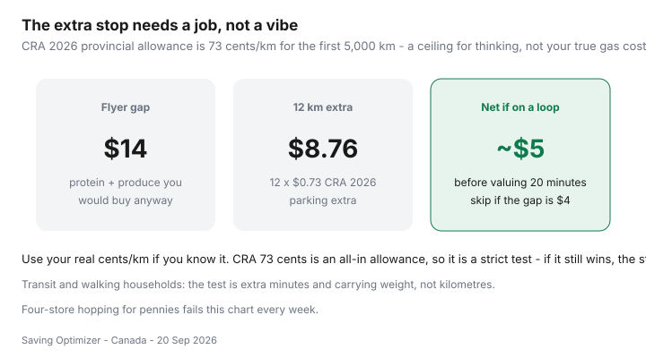

Food & Groceries · Canada
The two-store grocery strategy for Canadians: when the extra stop pays
Some households refuse a second stop and overpay for the whole cart at the closest full-service banner. Others hop four stores for 80 cents of yogurt and a croissant. Both are expensive. The Canadian version of “I save 40–50% by shopping around” only works when the second store has a job and the kilometres lose to a real gap.
This is a decision framework for urban and suburban distances — GTA plaza hops, Calgary big-box parks, Montréal métro-plus-one, and the long suburban arterial. It is not a scavenger hunt. Banner pairs sit in discount rotation.
Disclosure: Gas cashback cards and grocery loyalty cards are optional offer types around a two-stop week. Saving Optimizer may earn a commission if we later add partner links. Nothing here requires opening a card. Pay the card off. No partnerships are claimed with grocers or issuers.
Key takeaways
- Give each store a role: staples, loss-leader protein, or bulk. A second stop without a role is browsing.
- CRA’s 2026 provincial allowance is 73¢/km for the first 5,000 km (Finance Canada, Jan 2026) — a strict all-in ceiling. If the gap still wins at 73¢, the stop is real.
- A $14 protein-and-produce gap on 12 extra kilometres is about $5 before you value time. A $4 bakery detour is a loss.
- Meat last. Cooler bag in July. Do not backtrack across town.
- Carry the loyalty app that matches the till you will actually visit. Two cards, not five.
Calculate time and gas break-even
Write three numbers: extra kilometres (round trip beyond the one-store loop), minutes, and the dollar gap on items you would buy anyway. Use your real cents per kilometre if you know it. If you do not, 73¢ is a harsh test that already includes wear, not just gasoline. Territories sit higher (77¢ / 71¢). Transit households: minutes and carrying weight replace kilometres.

PFC posts that claim 40–50% savings are usually comparing a full-service default to a discounter-plus-one, not proving that four stores are free.
Assign store roles (staples vs loss leaders vs bulk)
| Pair | Store A job | Store B job |
|---|---|---|
| No Frills + independent market | Flyer protein, dairy, matches | Produce, rice, pulses, tofu |
| FreshCo + Costco (monthly) | Weekly Scene+ flyer | Paper, frozen veg, oil |
| Food Basics + Metro | Staples, Tuesday 10% if you qualify | Pharmacy or a genuine flyer exception |
| Maxi + specialty grocer | PC staples and meat | One cuisine’s pantry |
| Walmart + discounter | Rollbacks you already use | The flyer bird Walmart will not match |
Costco is usually a monthly third stop, not a weekly second — cart split.
Route planning to avoid backtracking
Draw the loop on the way home from work, not as a Saturday sport. Store with dry staples first, protein last, home. Crossing a city core twice for a 50-cent can is how “strategy” becomes a hobby. Price matching can retire a stop — Flipp matching.
Cold-chain tips for multi-stop shops
- Meat, dairy, and frozen last.
- A $10 insulated bag in July is cheaper than ruined chicken.
- Prairie January: the car can freeze milk against a door. Inside the cabin, not the uninsulated trunk, unless you like yogurt bricks.
- Flashfood pickup is a stop with a window. Put it on the same Loblaw trip or skip it.
Loyalty cards to carry for each stop
PC Optimum at No Frills / Superstore / Maxi. Scene+ at FreshCo / Sobeys / Safeway. Moi at Food Basics / Super C / Metro. Load offers before you leave the driveway — PC vs Scene+ vs Moi. A gas card that actually pays cashback on the extra kilometres is seasoning, not the reason for the trip. Pay it off.
When one store is the rational choice
Stay at one store when: the flyer gap is under ~$8, you are on a bus with bags, the discounter already has the protein, or you are tired and will impulse-shop the second building. Pickup is allowed to be the whole system.
Put the decision inside the weekly grocery loop, not in the parking lot.
Sources & date stamps
- Department of Finance Canada, 2026 automobile deduction limits (Jan 2026): 73¢/km first 5,000 km in the provinces; 67¢ thereafter; 77¢ / 71¢ in the territories.
- Community pattern: r/PersonalFinanceCanada posts on multi-store grocery savings — treat as anecdotes, not a 40–50% guarantee.
- Statistics Canada Daily, 14 Sep 2026: food from stores +2.8% year over year — the gap has to be real dollars, not vibes.
Frequently asked questions
When is a second grocery store worth it in Canada?
When the gap on items you would buy anyway beats extra kilometres, parking, and time. A $14 flyer-protein gap on a 12 km detour is close after CRA’s 2026 73¢/km provincial allowance ($8.76) — and fails if you also value 20 minutes highly. A $4 yogurt hunt never wins.
What is a good two-store pair?
Common urban pairs: No Frills + an independent produce market; FreshCo + Costco monthly; Food Basics + a Metro pharmacy stop; Maxi + a specialty grocer. One store owns staples. The second owns a named job.
How do I keep meat cold on a two-stop trip?
Meat and dairy last. Use a cheap cooler bag in summer or a Prairie winter car that is actually too cold. Do not leave chicken in a trunk while you browse a second flyer.
Which loyalty cards should I carry?
The card that matches each till: PC Optimum at Loblaw family, Scene+ at Empire, Moi at Metro family. Do not add a third store just to scan a fourth app.
When is one store the rational choice?
No car, a 40-minute bus, a discounter that already has this week’s protein, or a gap under $8. Pickup at one banner is also one store — on purpose.